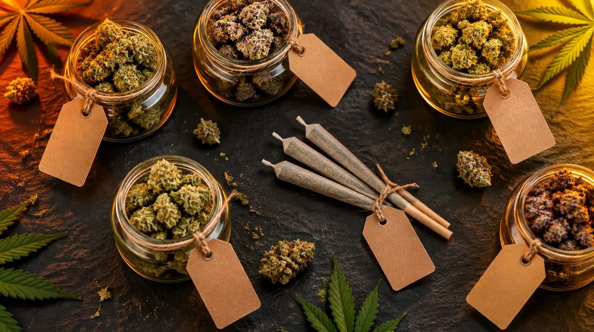
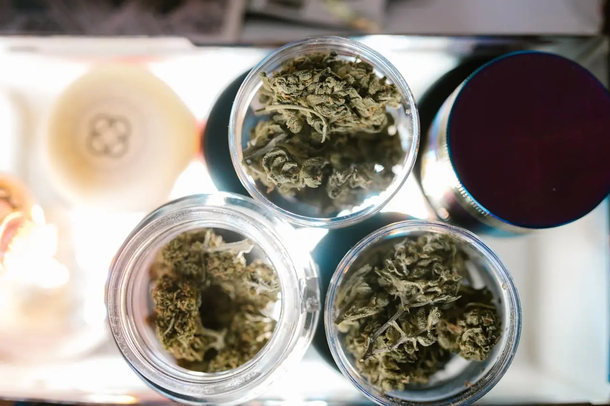
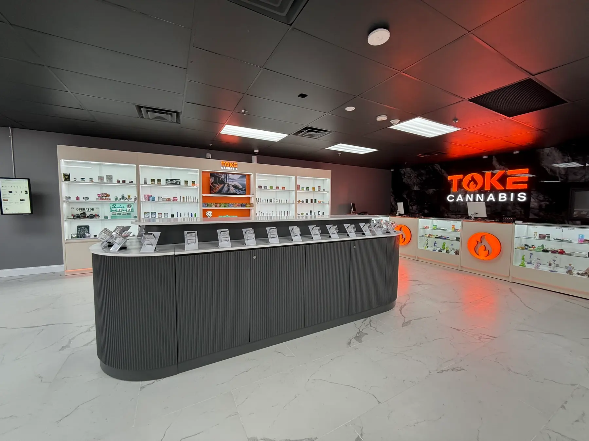
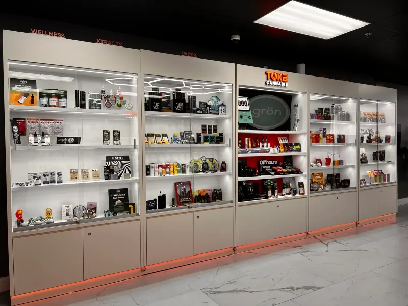

Local guides · 8 min read
Best Weed Deals in Yonkers and Spring Valley
Three discounts at Toke are always there, no code and no waiting for a sale: 15% off for veterans, 10% off for New York medical cardholders, and a welcome discount on your first order. Delivery is free on orders of $75 or more. Everything else rotates, and the rotating part gets posted on Instagram at @nytokes and updated on the menus.
This page is the stable half. It covers which discounts stand, what proof each one needs, how to ask whether two of them can go on the same order, and how to build a delivery cart that clears the $75 minimum without buying filler. Specific strain drops and this week’s prices are not in here on purpose, because they would be wrong by the time you read them.
What to know up front

- Veterans get 15% off at Toke with one-time proof, either a DD-214 or a VA ID. You show it once, not every visit.
- New York medical cannabis cardholders get 10% off.
- The first-order welcome discount applies automatically at checkout. There is no code to enter and no email signup gate.
- Delivery has a $75 minimum from both the Yonkers store at 471 McLean Ave and the Spring Valley store at 2 S Central Ave. Delivery is free on orders of $75 or more.
- Weekly drops and happy-hour pricing get announced on Instagram @nytokes, not by email, so that account is the fastest way to see what changed.
How the veterans discount works

Fifteen percent off, and you prove it once. A DD-214 or a VA ID card is what the counter needs to see, and once it is on your account you do not have to bring paperwork again. If you do not have a copy of your DD-214, the VA can send you your service records and it costs nothing.
The reason this one matters more than a one-day sale is that it applies every time. A recurring 15% on things you were buying anyway beats a deeper discount on a single item you did not want. Ask the budtender to check that it is on your profile before they ring you up the first time.
The discount for New York medical cardholders

Ten percent off with a valid New York State medical cannabis card. Bring the card, not a photo of it, and it gets attached to your account the same way the veterans discount does.
You do not need a card to shop here. Adult-use cannabis is legal for anyone 21 or older with a government photo ID, and the adult-use menu is the same menu. If you are curious what the medical program involves, the state’s medical cannabis patient page explains certification and what a card gets you.
What the first-order welcome discount actually does

It comes off at checkout on your first order, automatically. No code, no newsletter signup standing in the way, no popup to click through. If you are ordering online, you will see it reflected in the total before you confirm.
One thing worth planning around: it applies once. If your first order is a $40 pickup for one thing, that is where the welcome discount went. If you were already planning to try a few categories, doing that on the first order is the version that gets the most out of it. How to shop at Toke is a reasonable read before that first cart, since the menu is deliberately not endless.
Where weekly drops and happy hour pricing get posted

Instagram, at @nytokes. That is where new drops, weekly specials, and happy-hour windows go up, usually as they happen rather than on a fixed publishing schedule. The store menus reflect current pricing too, so the Yonkers menu and the Spring Valley menu are the second place to check.
If you only look at one, look at the menu. Instagram tells you something is happening. The menu tells you what it costs right now, and it is the version that is never out of date.
This week at Toke

Weekly drops land on both menus and go up on Instagram @nytokes when they do. Happy-hour pricing runs in windows rather than all day, and which window depends on the store and the day.
Check the menu before you build a cart. Pull up the store you are shopping, see what is discounted, and fold that into what you were going to order anyway. In any given week there is usually something moving in flower, pre-rolls, or vapes, and the categories that rotate most are the ones with the most brands on the shelf.
Can you stack two discounts on one order?

Ask at the counter before you check out. Discount rules vary shop to shop in New York retail and some are set by the point-of-sale system, so the fastest path to a real answer is a budtender or a phone call to 914-207-1545 for Yonkers or 845-406-3004 for Spring Valley.
What you can do on your side is make sure the store knows every discount you qualify for. If you are a veteran placing a first order, say so, so the right one gets applied instead of the one the system reaches for first. If you have a medical card, get it on your profile the first time you come in. Budtenders here are not on commission, so there is no reason for them to steer you toward the smaller discount.
How to time a delivery order around the $75 minimum

There’s one line to watch. Delivery starts at a $75 minimum. Delivery is free on orders of $75 or more. If your cart is a little short, a little arithmetic gets you over the line with things you’d buy anyway.
The practical version looks like this:
- Build the cart you actually want first, without thinking about the thresholds.
- Look at the total. If it is under $75, you are not getting delivery, so either add something or switch to pickup.
- If it lands at $75 or more, you’re set. Delivery is free on orders of $75 or more.
- If a weekly drop already has you well past $75, that is a good time to stock up on the things you buy repeatedly.
The smart way to close a gap is with things that keep. Flower in a sealed jar, a multi-pack of pre-rolls, a tin of gummies. Buying a fourth item you will not open for three months to clear the minimum is not a saving. Value flower covers smalls, 7 gram jars, and the mid-tier eighths that hold up, and those are the easiest thing to add without wasting money. Pre-roll multi-packs do the same job for a slightly different budget.
Full mechanics of coverage, cutoffs, and what happens at the door are in weed delivery in Yonkers and Westchester. Rockland deliveries run out of Spring Valley on the same $75 minimum.
How to tell a real deal from a markdown that isn’t

Three things to check before you decide something is cheap.
Look at the price per gram, not the price on the sticker. A discounted eighth and a full-price 7 gram jar frequently come out within a dollar or two of each other per gram, and the jar is the better buy. Value flower pages exist because this math surprises people.
Check the harvest or package date. Flower that has been on a shelf a long time is often discounted for exactly that reason, and it is still worth buying if the price reflects it. What you do not want is to pay near-full price for something that dried out in the jar. Ask. A budtender will tell you.
Ignore the THC number as a value signal. A 32% jar is not automatically worth more than a 24% jar, and what THC percentage actually means goes into why terpene content and cure quality drive the experience more than the top-line number does. Paying a premium for a percentage is the most common way people overspend in a dispensary.
Frequently asked questions
What are the best dispensary deals near me in Yonkers? The standing ones at Toke on McLean Ave are 15% off for veterans, 10% off for New York medical cardholders, and a first-order welcome discount applied automatically at checkout. Weekly drops and happy-hour pricing change and get posted on Instagram @nytokes and on the Yonkers menu.
Does Toke have a veterans discount? Yes, 15% off with one-time proof. Show a DD-214 or a VA ID once and it goes on your account, so you are not carrying paperwork to every visit.
Do I get a discount on my first dispensary order? Yes. The first-order welcome discount comes off automatically at checkout, with no code to enter. It applies once, so it is worth using on an order you were going to place anyway rather than on a single small item.
Can I use a medical card discount without a medical card? No. The 10% cardholder discount requires a valid New York State medical cannabis card. You can still shop the adult-use menu at 21 or older with a government photo ID, and it is the same menu.
Is there a delivery fee in Yonkers? Delivery starts at a $75 minimum. Delivery is free on orders of $75 or more. Both stores run on the same minimum.
How often do the deals change? Weekly drops and happy-hour pricing rotate. The standing veteran, medical, and first-order discounts do not. Instagram @nytokes gets the announcements and the store menus carry current pricing.
Are dispensary prices in New York negotiable? No. Licensed dispensaries sell at posted prices, and New York’s cannabis taxes are applied at the register. The way to pay less is to use the discounts you qualify for and to buy in the formats that price better per gram.
Where to find the current list
Deals move week to week, so the two live sources are the menus and Instagram. Open the Yonkers guide if you have not shopped either store before and want to know what to expect from the counter.
Toke Yonkers, 471 McLean Ave, Yonkers, NY, 914-207-1545, open 10:00 AM to 10:30 PM Sunday through Thursday and 10:00 AM to 11:00 PM Friday and Saturday. Toke Spring Valley, 2 S Central Ave, Spring Valley, NY, 845-406-3004, open daily 10:00 AM to 11:00 PM.
Delivery from both stores has a $75 minimum. Delivery is free on orders of $75 or more. Bring a valid government photo ID, 21 or older, and cash or debit if you are paying at the door.
Keep reading
More from the blog

How to Choose What’s Right for You (Especially If It’s Your First Time)
If you’ve ever walked into Toke Cannabis in Yonkers or Spring Valley, New York and said, “Okay… I have no idea where to start,” you’re not behind…
How to Read a New York Cannabis Label
Every product sold at a licensed New York dispensary carries a label, and it tells you more than most people realize. What’s in it, how much, when it…

Best Cannabis Vapes in Westchester
The short version: if you care about flavor, buy a live resin cart. If you care about being discreet and not thinking about it, buy an all in one…
Two stores · open 7 days
Order tonight, pick it up in minutes
Order online for in-store pickup, curbside pickup, or delivery across Westchester and Rockland. Free delivery on orders of $75 or more.